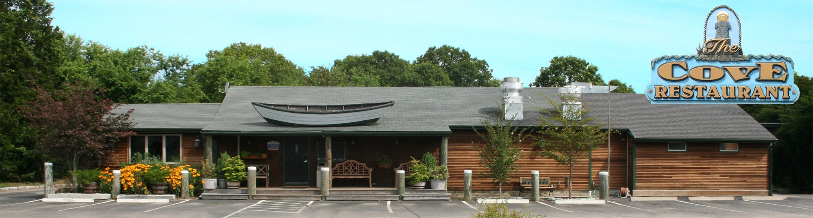

Find The Cove.
Give us a call
(401) 364-9222
Questions about your visit, this week’s entertainment, or dietary needs? We’re happy to help.
Make time for The Cove.
| Monday | Closed |
|---|---|
| Tuesday–Thursday | 11:30 am–9 pm |
| Friday | 11:30 am–10 pm |
| Saturday | 11:30 am–9 pm |
| Sunday | Noon–9 pm |
Holiday hours and entertainment schedules may vary. Please call before making a special trip.
Every Friday night
Karaoke with Jeffrey Thomas
Bring your favorite song. Call us for the start time and this week’s details.
Call about Friday night